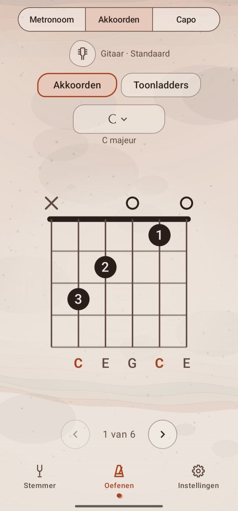

Akkoorden
Akkoordschema's voor het instrument en de stemming die je speelt: twintig akkoordsoorten op elke grondtoon, met tot zes manieren om elk akkoord te spelen, de makkelijkste eerst. In Drop D, DADGAD of een eigen stemming worden de schema's voor die stemming uitgerekend.
Een akkoord opzoeken
- Tik op het tabblad Oefenen, dan linksboven op de functieknop, en kies Akkoorden.
- Ernaast staan je instrument en stemming, bijvoorbeeld Gitaar · Standaard. Tik erop om een andere te kiezen; de stemmer gaat mee.
- Tik op de naam van het akkoord, de brede knop eronder, en kies een Grondtoon (de twaalf noten) en een Akkoordsoort. Het schema verandert terwijl je kiest.
- Veeg over het schema, of tik op ‹ en ›, voor de andere grepen: 2 van 6.
Het schema lezen
Het schema is de hals rechtop, zoals in een songboek: de snaren lopen van boven naar beneden, de laagste links, en de dikke lijn bovenaan is de topkam. Een greep hoger op de hals heeft geen topkam, maar 5fr naast de eerste rij: die rij is de 5e fret.
- o boven een snaar: speel hem open. ×: speel hem niet.
- Een stip is waar een vinger komt, met zijn nummer: 1 de wijsvinger, 2 de middelvinger, 3 de ringvinger, 4 de pink.
- Een balk over meerdere snaren is een barré: één vinger, meestal de wijsvinger, drukt ze allemaal in.
- Onder de snaren staan de noten die ze laten klinken; de grondtoon van het akkoord staat in kleur.
De akkoordsoorten
Op een C zijn dat: C, Cm, C5 (het powerchord), C7; Cmaj7, Cm7, Csus2, Csus4; C7sus4, C6, Cm6, Cadd9; C9, Cm9, Cmaj9, C7♯9; Cdim, Cdim7, Cm7♭5 en Caug. Onder het symbool zegt de knop de naam in woorden, C groot septiem.
Goed om te weten
- Elke greep wordt voor jouw stemming gezocht, ook een lagere of je eigen, en past binnen vier frets, overal tot de 12e. Heeft een akkoord er geen, dan staat er Geen greep binnen bereik in deze stemming.
- Op de ukelele en de mandoline gebruikt elke greep alle vier de snaren, zoals hun akkoordboeken doen.
- Speel je linkshandig? Instellingen → Linkshandig tekent de schema's andersom. Zie Linkshandig.
- Noten worden geschreven zoals je hebt ingesteld bij Instellingen → Nootnamen.
- De grondtoon die je hier kiest, is ook die van Toonladders, dus je gaat zo van een akkoord naar zijn toonladder en terug.
- De korte snaar van de 5-snarige banjo zit nog niet in de schema's; bij de banjo staat dat op de plek van het schema.
- Met TalkBack wordt het schema snaar voor snaar voorgelezen, vanaf de dikste.
Voor wie het wil weten: waar de grepen vandaan komen
De schema's zijn geen ingetypte lijst: Twangle rekent ze uit voor de stemming die je speelt. Hij probeert elke snaar gedempt, open of ingedrukt binnen vier frets, en houdt de grepen die elke noot van het akkoord laten klinken en geen andere (een sext-, septiem- of noonakkoord mag zijn kwint weglaten, zoals gitaristen doen). Snaren worden alleen aan de dikke kant weggelaten, zodat je het akkoord kunt aanslaan, en op vijf snaren of meer is de laagste noot de grondtoon.
Daarna zet hij ze op moeite: elke vinger, een barré, een grote spreiding, een hand ver op de hals en een weggelaten snaar tellen een beetje mee. De gewichten zijn zo gekozen dat in standaardstemming de grepen die akkoordboeken eerst tonen, ook hier eerst komen: C is de open x32010, vóór de barré op de 3e fret.
